CRUSHING
My name is CRUSH, I'm 8 years old and the devil was my lover in a past life. In my current life I spend most of my time at my computer, drawing or coding away at this website, which is essentially a dumping ground for my various hobbies and interests.<< Hotline Webring >>
<< Retronaut >>
Navigate
└ Petz└ Stray Kids
└ 大相撲
└ 2020
└ 2021
└ 2022 └ Layout History
└ Pets
└ Dropdown Menu
└ Character Profile Template └ Harvest Moon: Animal Parade └ Custom Brush Set
└ Intoxicate Pencil Set
└
└ Mixing Color Set
└ Art Fight
└ Fur Affinity
└ Flight Rising
└ iNaturalist
└ Clip Studio Assets └ Terms of Use
└ Comment
CRUSHING ✦ Harvest Moon: Animal Parade
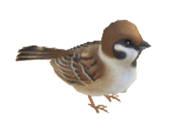
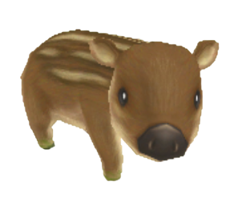
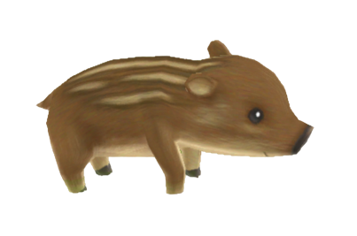
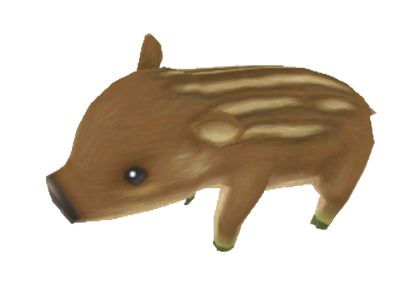
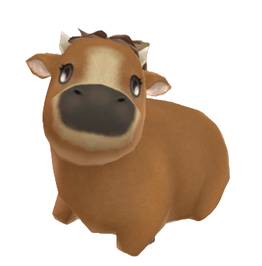
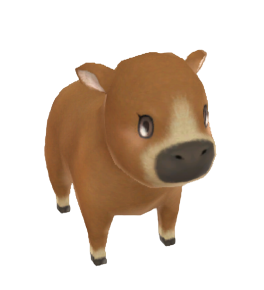
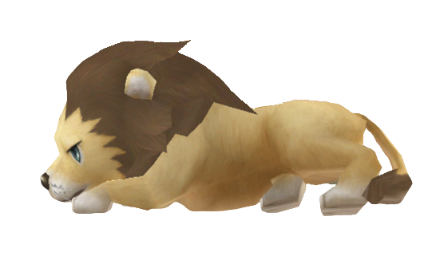
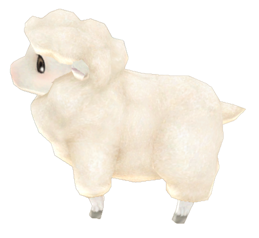
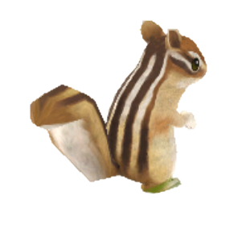
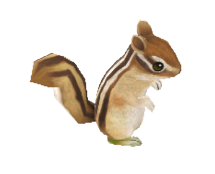
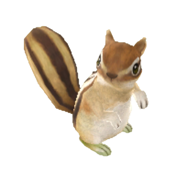
Terms of Use
Artwork
You may use my personal fanart or original art (ie. anything that wasn't commissioned by someone or otherwise for sale or paid for) for non-commercial purposes - icons, banners, printing, referencing, and so on.
I'm not overly protective of my original characters so you can treat them as you would characters from any other media. Have fun, get creative with it.
PERMISSION - Asking for permission isn't necessary, but feel free to leave a comment or message me elsewhere if you have any questions or want to share something.
REPOSTING - I regularly delete posts from social media anyway so reposting isn't that big of a deal to me. If you want to archive my work somewhere go for it.
ATTRIBUTION - I would appreciate being credited but I won't hunt anyone down over this. Just don't claim you made something that you didn't because lying is stupid.
Do not try to profit off of my art in any way - no selling prints, no tracing it for commercial projects, etc. If I provided it for free I want it to stay that way.
Do not use or repost my commissioned work, designs that are for sale or sold, gifts, or trades if you aren't the original client or owner of the character. My commissions and designs have their own terms.
Photography
My photos are public domain and free to use for commercial or non-commercial purposes, no attribution necessary.
Graphics, resources, etc.
Any graphics, code snippets, templates, brushes, and other resources created by me are free to use, no attribution necessary. Some stuff such as game art doesn't even belong to me in the first place, I just edited it, so do with it what you will.
CRUSHING ✦ Layout History
V1 - CRUSHING PETZ Is Born
CRUSHING began life as a Petz-only site hosted on Tumblr. I used Tumblr at the time because I found hosting my images and files with drafts and a private Discord server more convenient than whatever Neocities has going on.
I think this layout was edited from one of the templates on The Lilac Lynx, although heavily modified to the point that it doesn't resemble the original at all. I really owe everything to Kalium for both getting me into Petz and also kickstarting my web-making journey.
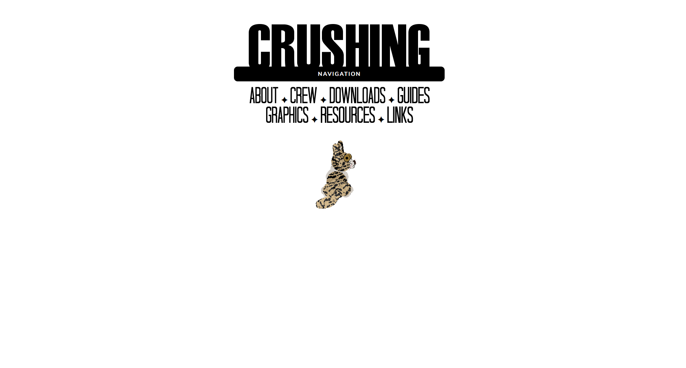
V2 - John Doe Saves The Day
Version 2 didn't change much aside from the navigation. Navigation was a sticking point for me in the beginning because I didn't want to have to edit separate HTML files for every single page if they weren't going to have much content on them anyway. I was originally using JavaScript to make pages within a single HTML file, but this came with the caveat of not letting you link directly to individual pages similar to iFrames.
I wasn't sure how to fix this until I found the John Doe template, which solved basically all of my problems with some extremely simple CSS. I decided to move the site to Neocities after this update.
As a funny aside, my Tumblr ended up getting suspended in the process of moving because they apparently didn't like the script I tried using to redirect to the new site lol.
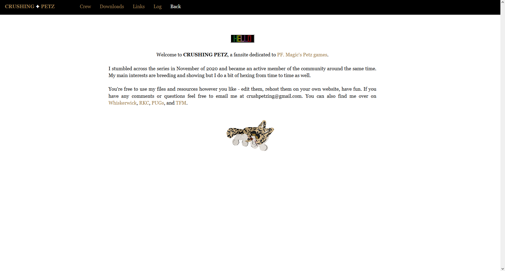
V3 - Beautiful But Broken
Version 3 was my first attempt at making a more complex layout from scratch. The first few iterations of the site were very bare-bones, which was fine by me since I value the content and usability of a site more than anything, but now that my navigation issue was solved and I understood more about HTML I wanted to start experimenting with the visuals.
The result was nothing flashy but I was satisfied with it. It did however produce a new problem in that it wasn't mobile responsive like the earlier layouts since they came with that out of the box, and it turned out to be inconsistent even across larger screen sizes which especially annoyed me.
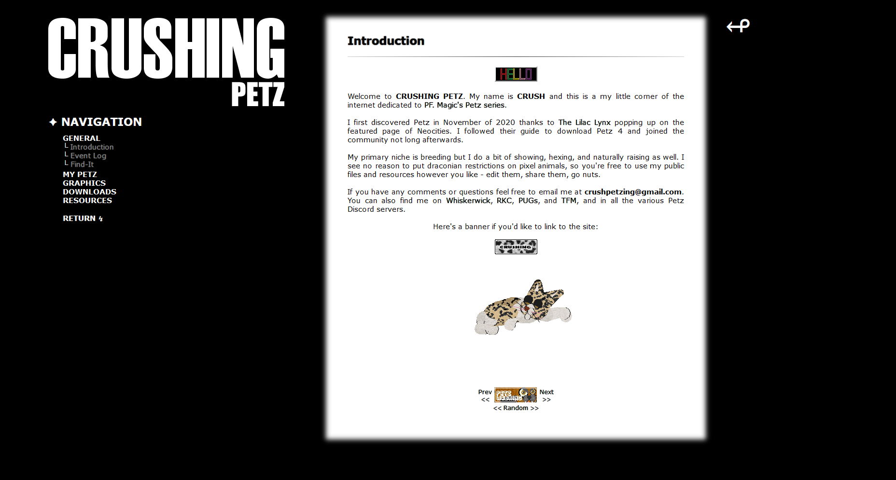
V4 (Current) - GitHub Is Awesome
After finishing the V3 layout I expanded the site to cover topics other than Petz, but continued using V2 for those pages since it was more important to me that they were accesible on mobile. So if you were thinking V4 looks eerily similar to V2 that's because it is actually the same, I just removed the navbar and restructured the navigation using the dropdown menus from the V3 layout. I eventually moved the Petz site onto this layout as well after the poor responsiveness got to me.
This is also when I discovered GitHub Pages and VS Code. I only had to test it out for a few days before I decided that moving to GitHub was the right call. The Neocities editor gets overloaded easily with my single HTML file method and navigating the folder structure on there is a nightmare. They also won't host ZIPs which is why I had to use Discord for most of my file hosting needs. Using VS Code and GitHub Desktop to push updates is just a massive upgrade by comparison.
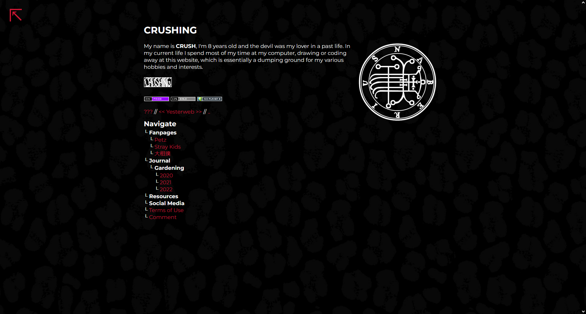
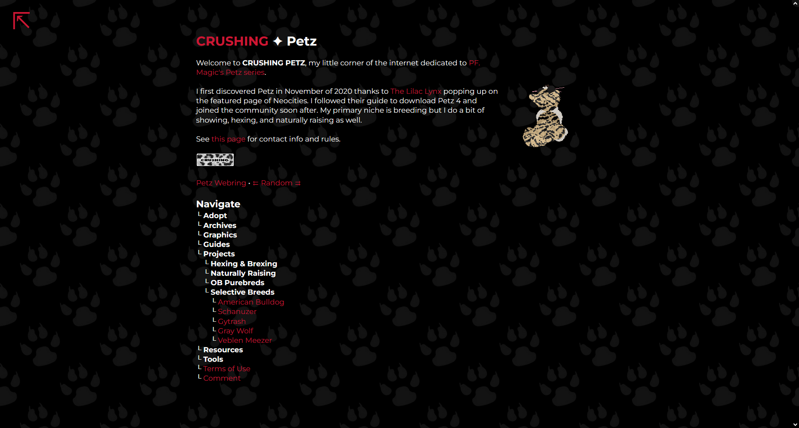
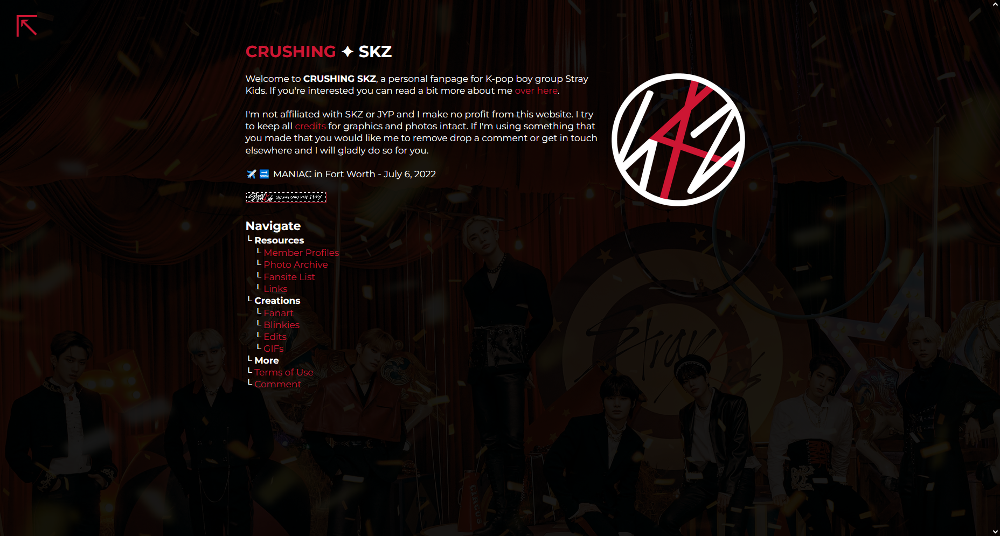
CRUSHING ✦ Gardening in 2020
This was my first year gardening. I lost the dates for some of these pics.[ 200406 ] This layout was terrible. We also bought way too many fuckin onions.
Front: Onions, strawberries
Middle: Regular and cherry tomatoes, okra, baby spinach
Right: Bell peppers
Left: Bush beans, more bell peppers, a bunch of onions in pots...
[ - ] Beans are probably the best thing to grow if you suck at gardening. Very easy and rewarding.
[ - ] I don't even like tomatoes but wound up with a ton of them. I gave most of them away and used the rest to make sauce.
[ 200528 ]
[ 200615 ] Indian shot (canna), native to South America. It grows well here and has fun seed pods.
[ 200625 ] I found a tobacco hornworm demolishing one of my tomato plants. A wasp was attacking him so I decided to save him and raise him.

The bell pepper harvest was also pretty good. We made stuffed peppers with them.
[ 200626 ] A few stab wounds can't stop this guy. I fed him potatoes for a day and he was ready to pupate.
[ 200707 ] Okra has pretty flowers. It's related to hibiscus and cotton.
[ 200721 ] I found three more hornworms not long after the first one and added them to the hoard. Only two of them successfully pupated, including the one I originally saved.
[ - ] Angelonia.
[ 200803 ] The most alien caterpillar I've ever seen, a Brazilian skipper, sewing up canna leaves.

[ 200805 ] Once everything from spring was harvested I changed the bed layout to something less idiotic and planted some peas, carrots, lettuce and chard for the fall. While planting I noticed that there seemed to be ants carrying my seeds off, and I did in fact end up with no lettuce or chard growing. Those little bastards.
[ 200813 ] A million tersa sphinx caterpillars I found destroying our pentas. Extremely cute, but deadly (to pentas).

[ 200831 ] Peas flowers are cute. They didn't produce anything worth eating though, maybe because it was too hot. I just saved the seeds.
CRUSHING ✦ Gardening in 2021
I grew a lot of flowers this year. My main project was trying to make compost from spent coffee grounds and dried leaves.[ 210329 ] A nice rainbow after a storm.

[ 210330 ] Phlox and blueberries.
[ 210427 ] Dianthus, butterfly bush, blanket flowers.
[ 210603 ] The butterfly bush lives up to it's name. Here's a lovely zebra swallowtail.

These lilies were planted here before we moved here. They're all orange except for this one special fellow.
[ 210701 ] A relative gave me some sunflower heads from her garden last year and I planted the seeds this summer. I found out the hard way that they need to be supported since a light breeze is enough to knock them over.
[ 210710 ] Coneflowers and strawberries that were planted last year, doing well this year.
The corn however...was a mistake.
[ 210713 ]
[ 210718 ]
[ 210727 ] I always see a lot of these guys on the sunflowers, ligated furrow bees.

[ 210809 ]
[ 210909 ] Cosmos from a wildflower mix.
[ 210914 ] Mums.
CRUSHING ✦ Gardening in 2022
[ 220428 ] I put the compost I made on the beds and planted a bunch of random seeds I had saved up from previous years.Left: Bush beans
Right: Bush beans, bell peppers, peas, chard
[ 220503 ]
[ 220507 ]
[ 220517 ]
[ 220531 ] In 2020 I collected seeds from some established coneflowers we bought and planted a handful of them in spring of 2021. They're doing really well now.
[ 220604 ]
[ 220611 ] A relative had this small field plowed and I planted it with some peas and onions for them a couple of months ago. This isn't really my project but it is in my back yard so I figured I would show it off.

I sprouted these from some grocery store pears two years ago and they were finally planted in the ground today. Not sure if they'll produce any fruit but maybe they'll flower nicely. We shall see.

[ 220621 ] The bean haul.
Comment
Comment Box is loading...
Why Sumo?
Sumo first came to my attention in Fall of 2016. I was studying Japanese at the time and kept noticing sumo terms popping up in my vocab lists, so I looked it up out of curiosity and watched a few videos posted by a guy named Jason on YouTube.Getting Hooked
The September tournament was underway so I followed the remaining few days via Jason's uploads and watched Goeido win his zensho. I was intrigued enough to watch the next few tournaments as well, and 2017 happened to open with Kisenosato being promoted to yokozuna and then fighting through the injury that ultimately ended his career. I think seeing his story play out in such a dramatic fashion is what really sold me on the sport, and I've been a fan ever since.Links
Learn More
Sumo Q&AGlossary of Sumo Terms
Sumo Techniques
Chronicle of a Sumo Wrestler
Watch Sumo
News & Discussion
Sumo ForumGrand Sumo Breakdown
Sumo - The Japan Times
Tachiai Blog
stickers by tony_mika